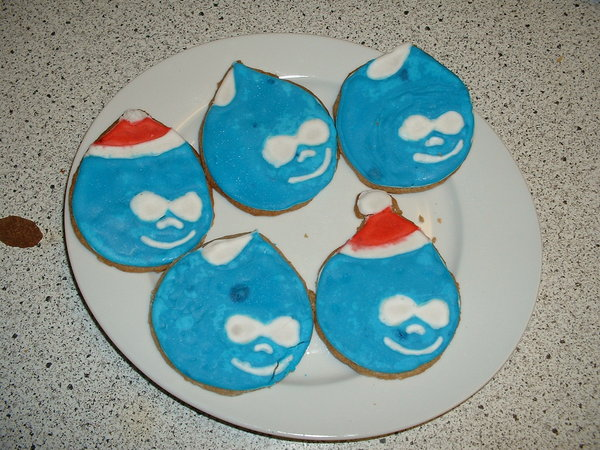

drupal
Import Your Drupalcon Chicago Schedule to your Calendar
Submitted by andrew on Tue, 03/08/2011 - 17:14
One of the new features of the Drupalcon Chicago website is the "My Schedule" feature. You can add and remove sessions to your schedule, and view a list of all of the sessions you want to attend in one place. Unfortunately, the schedule isn't available in the iCal format used by Google Calendar, iPhones, and other calendar systems.
I guess this means it's a good excuse to write a Drupal 7 module (and use the new Git sandbox) to do the conversion automatically!
Related Links:
Drupalcon Chicago iCal Generator Drupal 7: A Guided Tour
Submitted by andrew on Wed, 10/27/2010 - 09:19
Last week I gave a presentation to the Waterloo Drupal Users Group about Drupal 7. During the presentation, I gave demonstrations of Seven and Bartik, along with some of the other admin UI improvements. I also presented brief overviews of features and APIs relevant to developers and designers. Click through to see the video, or download the high-resolution version from archive.org.
DrupalCamp Toronto 2010: Drupal For Fun and Profit + Contributing to Drupal
Submitted by andrew on Fri, 10/15/2010 - 18:38
Today at DrupalCamp Toronto, Khalid Baheyeldin of 2bits.com and myself gave a combined presentation introducing both the business aspects of Drupal and starting to contribute back to the Drupal community.
Here are the slides - at the end is the recipe for the Druplicon cookies. I'd love to see any further variations on it!
Video: Instant Syndicating Standards
Submitted by andrew on Thu, 09/09/2010 - 08:18
August's presentations to the Waterloo Region Drupal Users Group included a remote presentation from Brazil by Nick Vidal about Instant Syndicating Standards. ISS is an open standard allowing the dissemination of information through decentralized social networks. The reference implementation is being developed with Drupal 7.
Related Links:
WDUG ISS Presentation Video Video: Introduction to Git
Submitted by andrew on Tue, 07/20/2010 - 17:18
On Thursday, July 15th, Chris Frey gave the Waterloo Region Drupal Users Group a presentation about the Git version control system. I've uploaded a video of the presentation to archive.org. To get the slides and scripts, you can use Git:
$ git clone http://foursquare.net/intro_to/.git intro_to_git
Related Links:
WDUG Git Presentation Video A Big Thank-You to the Drupalcon SF Sponsors
Submitted by andrew on Tue, 04/27/2010 - 21:48
in
I think I'm finally recovered from my week at Drupalcon SF. This conference was one of the best I've ever attended, and connecting and re-connecting with contributors from around the world was rejuvenating. I'm very grateful for the scholarship I recieved from the Drupal Association, and wanted to thank some of the people who helped make that happen.
Waterloo Region DUG: Contributing to Drupal
Submitted by andrew on Fri, 02/19/2010 - 00:52
One of the most difficult hurdles for new members of the Drupal community to overcome is making the jump from a "user" to a "contributor". Many associate "contributor" with core hackers, PHP gurus, and CSS wizards. In reality, any Drupal user or site builder can easily become a contributor, through support, advocacy, documentation, and so on. For more information, check out the attached slides, or see the Drupal.org Contribution page.
Drupal Cookies!
Submitted by andrew on Tue, 12/22/2009 - 11:22
in
I received a most excellent Christmas present from a friend of mine:
Druplicon cookies (looks like she saw my Drupalcamp Montreal shirt!)
And though she didn't know it, the other cookies matched the theme perfectly: